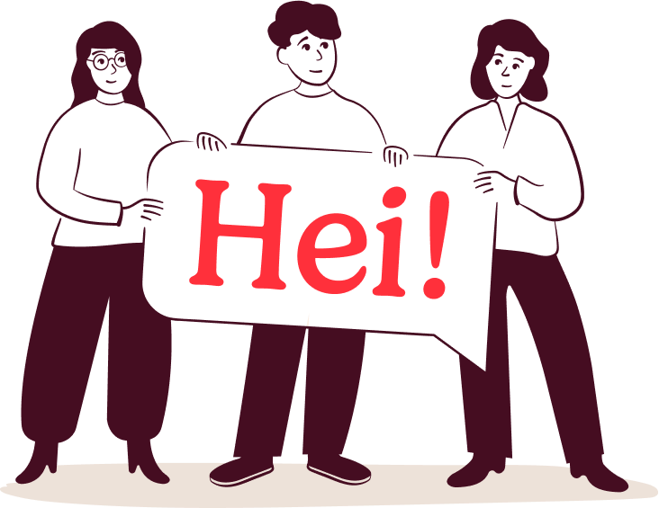
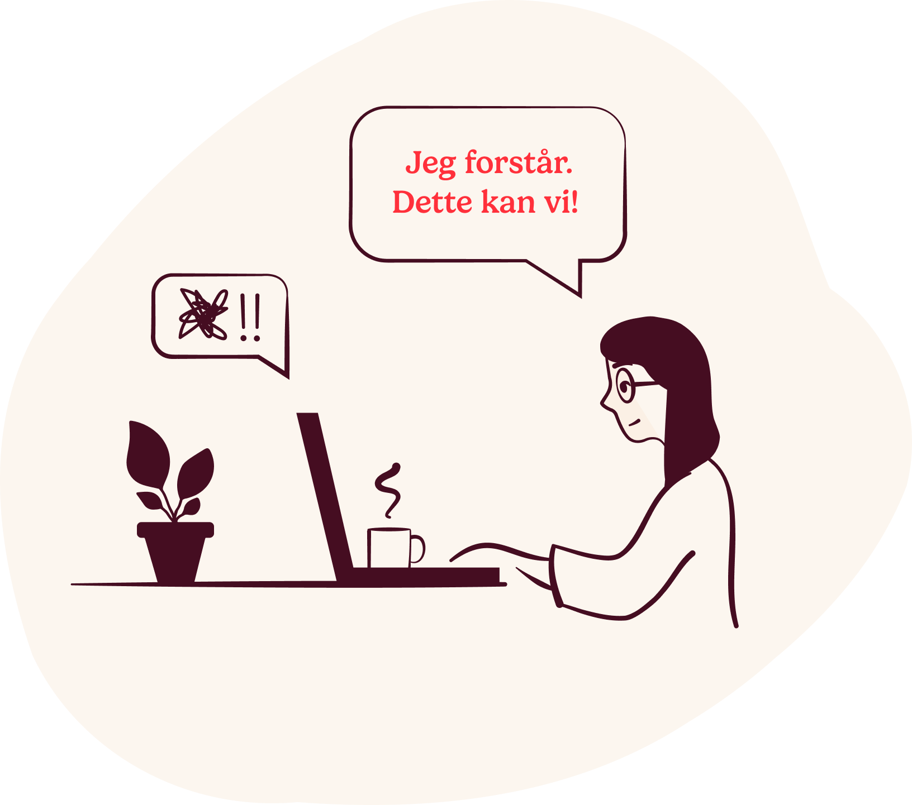
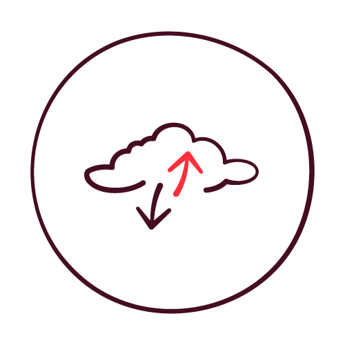
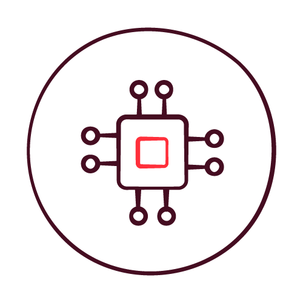
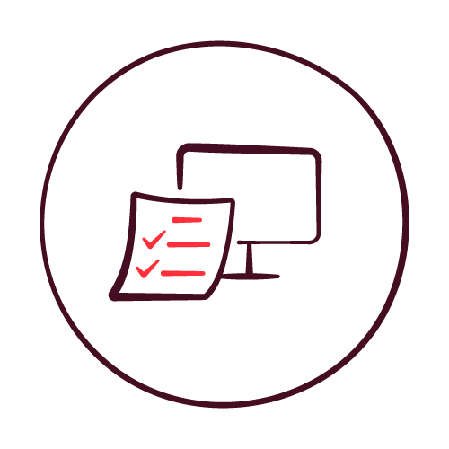
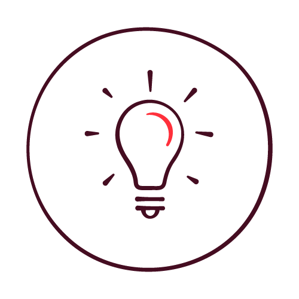
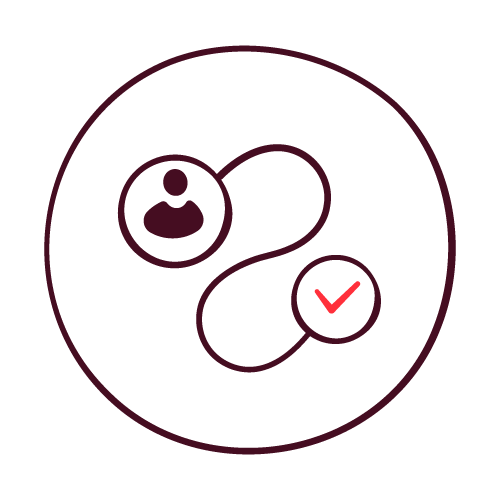

Tjenesteområde2026
Data og AI
Den håndtegnede rammen — 1,5px burgunder strek, ingen fyll, ingen skygge. Mønsteret for brosjyrer og redaksjonelle kort.
Digital brosjyre


Faglig autoritet og varme
Et verdidrevet konsulentselskap med lidenskap for teknologi og varme for hverandre. Denne siden viser designsystemet vårt i bruk — tokens og komponenter, lyst og mørkt.

Farge
Hver flate starter som krem. Burgunder bærer struktur og tekst. Miles-rød er energien — omtrent ti prosent av et oppsett. Aldri svart, aldri ren hvit på krem.
Typografi
Gelica · display
Smart og varig
Gelica italic · ingress
Smarte, robuste og varige løsninger skapes i samarbeid med andre.
DM Sans · brødtekst
DM Sans er en klar og minimalistisk skrift som balanserer Gelica. Den bærer tabeller, knapper, etiketter og lange avsnitt der serifen ville blitt for mye.
«Hei, og takk for at du bryr deg!»
Komponenter
Den håndtegnede rammen — 1,5px burgunder strek, ingen fyll, ingen skygge. Mønsteret for brosjyrer og redaksjonelle kort.

Bruk de medfølgende illustrasjonene. Den håndtegnede ufullkommenheten er hele poenget — ikke generer nye.
Visjon
Vi møter mennesker med faglig autoritet og varme. 2px Miles-rød ramme rundt en kort, viktig påstand.
Teknologi, sky og plattform
Data og AI
Strategisk IT
Transformasjon og mennesker
Brukeropplevelse og innovasjonNavigasjon
Digitalt
Den håndtegnede telefonrammen bærer SoMe- og produktinnhold i markedsslides.
Følg ossMye er nytt
Rød flate, krem tekst. Den ene halvdelen av sammenligningen.
Mye består
Krem flate, burgunder tekst. To toner, ett budskap — fast i begge temaer.
Denne siden er bygget kun på colors_and_type.css + components.css og de medfølgende fontene og bildene. Bytt tema nederst til høyre.